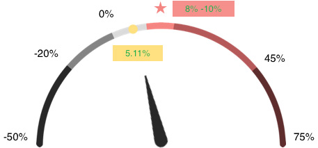
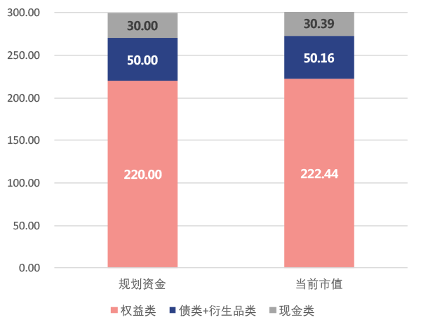
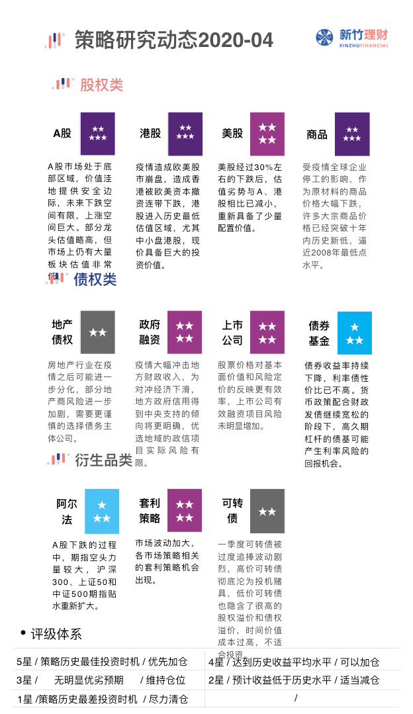
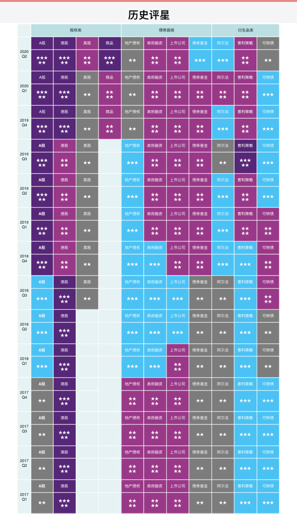

徐先生家庭投资年报
2019年12月
刘德华先生/女士，您好！
您好，截止2020-11-30，我们已经与您走过了388个日 子 ， 您 家 庭 目 前 市 值 为 CNY3,048,493.56 。 盈 利 548,493.56，绝对收益率21.94%(IRR年化复合收益率 =20.51%)。
|
目标收益 8-10%（复合年化） |
下行波动 -15%（年内） |
|
极端情况 -20-25%（年内） |
目前组合收益 5.11% |

投资组合运行评价
历史调仓比例

组合比例变化
自服务以来，我们排除了2020年新冠疫情等短期严重的干扰 因素，按节奏建仓，执行投资计划，从2020年1季度至今， 我们与您沟通后逐步建仓，根据市场波动和您的收益目标保 持各类资产比例。截至2020年11月30日，组合内比例为权益 类:债类:现金类 = 84%:16%:0%。
◆ 以上盈亏情况以11月29号基金公司公布净值为准
沪深300
创业板指
◆ 数据来源:东方财富Choice数据
|
现阶段持有产品 |
||||
|---|---|---|---|---|
| 债类+衍生品类 | ||||
| 产品名称 | 份额 | 市值(CNY) | 盈亏率 | 操作 |
| 国富中小盘股票 (450009) | 460,000 | 6.34% | 6.34% | |
| 华安沪港深通精选 灵活配置混合 (001581) | 470,000 | 6.48% | 6.34% | |
| 小记 | -- | 2,547,036.12 | 27.38% | |
◆ 以上盈亏情况以11月30号基金公司公布净值为准
10年期国债收益率
◆ 根据债券定价原理，当国债收益率下跌(曲线向下时)，意味债券价格上涨
➢ 2020年01月31日
新竹预计疫情对市场可能 造成短期大幅波动，所以 提前和您沟通并提供对应 调整方案。
➢ 新竹理财:
近期肺炎事件爆发比较严重，节后第一个交易日【2月3日】若当日 【指数跌幅在5%以内】，我们将建议【减仓股类，减至留出股类持 仓20%左右的现金头寸】;若当日【指数跌幅超过5%】，则保持 【持仓不变】以待修复。
结果：在开盘首日市场的确大幅下跌超7%左右，因为新竹提前研究 了疫情对市场的影响，并和您进行了充分的沟通，所以我们在经历 节后第一个交易日的大幅下跌时没有因心理恐慌而减仓。在市场熊 市转牛市的过程中，我们去坚定的持有足够份额的资产，有益于我 们在牛市到来时获得应有的收益回报。
➢ 2020年01月31日
新竹在和您充分沟通的前提 下，3月份市场回调时，保 持了权益占比65-70%的比 例，并在4-5月逐步加仓。
➢ 新竹观点:
近期市场风险受疫情影响逐渐缓和，A股目前仍热处于较低 估值水平，未来潜在上涨空间巨大。此次与您沟通完，决定 增加配置100万私募产品，完善资产配置组合。
投资计划
这里是柱状图
注:现阶段权益类、债类+衍生品类、现金现阶段比例分别 为85%、15%、0%。由于目前市场已处于牛市中段阶段， 我们将继续保持股债8:2的比例，适当浮动。若市场发生变 化，我们也会及时帮您做出调整。
情景1
➢ 情景:2020年至2022年， 未来3年迎来上涨牛市，市 场上涨50~70%
内部收益率:25%/年 +
情景2
➢ 情景:2020年至2022年， 未来3年迎来上涨牛市，市 场上涨50~70%
内部收益率:25%/年 +
李先生，您好，
您使用新竹理财向导服务已经一年了。过去的一年里，年初经历了肺炎 疫情对市场的大幅波动影响。2020年三季度市场小幅上涨，大多数家 庭投资者开始手足无措，不知道后续该如何配置。我们通过理财向导服 务来协助您进行投资规划，梳理了财务目标，确定战略结构，在市场震 荡过程中根据合适的建仓节奏、市场中枢附近及以下区域位置加仓。截 止至2020年11月30日，您账户总盈利为548,493.56万，总盈亏率为 +21.94%(内部收益率为20.51%)。在承担较小波动的情况下，成功 地配置规划资金85%的比例到权益类资产，15%的比例到债类+衍生品 类资产，从而使组合中积累到足够的低成本份额。按照您组合中目前的 情况，您的家庭财富有很大概率获得长期10~15%甚至更高的年化收益 (自2020年2月起算)，显著跑赢通过膨胀率。
这一年中我们对权益类资产共做出3次调整，计划接下来半年内保持权 益类和债券衍生品类的目标比例。A股目前处于价值中枢附近区域，预 计未来三年间可能有大幅提升空间。之前由于国内经济处于下行周期 中，利率持续降低，债券价格上升，债券型基金收益小幅超越同期银行 理财收益，所以过去两年中建议您债类资产配置到债券型基金中。现阶 段国债收益率经历了一定的回调上涨后，从基本面来看，国债收益率还 是会回到低利率空间中，收益率下跌对应的是债券价格上涨。
您的可长期投资规划的资产在现阶段已完成长期熊市转牛市过渡期间的 建仓，获得了牛市上半场的收益。我们会持续关注市场和您的持仓比 例。目前来看，市场在中长期角度仍处于高于平均收益的良好投资时 机，所以我们的战略仍保持不变，维持权益类仓位在最高比例，直到市 场泡沫阶段，以获得未来1-3年牛市上涨带来的大幅增值。这个过程 中，我们将会非常重视疫情对市场的影响，以及国内外资本市场对您投 资组合的影响。如未来市场明显上涨估值泡沫化，或国内经济增长受外 部因素彻底扭转，我们会及时调整您家庭的仓位情况。
2019.8 创业板借壳新规发行
10月18日，证监会发布实施修改后的《上市公司重大资产重组管理办法》，倍受关注的是首次明确允许创业板有条件借壳，即允许符合国家战略的高新技术产业和战略性新兴产业相关资产在创业板重组上市。
影响：短期看放开创业板借壳一定程度上会激发创业板存量公司的活力，为经营不善、转型乏力的公司输入新鲜血液。目前，随着科创板注册制的实施以及退市制度日益完善，壳资源价值已经大幅贬值，长期对A股影响有限。
操作：原本我们给客户建议的投资组合中也没有炒作壳资源的风格。在未来我们将依然坚持各个家庭在投资组合中价值风格和成长风格的配比，建议客户不要因为这个消息去“炒壳股票” 。
2019.8 创业板借壳新规发行
10月18日，证监会发布实施修改后的《上市公司重大资产重组管理办法》，倍受关注的是首次明确允许创业板有条件借壳，即允许符合国家战略的高新技术产业和战略性新兴产业相关资产在创业板重组上市。
影响：短期看放开创业板借壳一定程度上会激发创业板存量公司的活力，为经营不善、转型乏力的公司输入新鲜血液。目前，随着科创板注册制的实施以及退市制度日益完善，壳资源价值已经大幅贬值，长期对A股影响有限。
操作：原本我们给客户建议的投资组合中也没有炒作壳资源的风格。在未来我们将依然坚持各个家庭在投资组合中价值风格和成长风格的配比，建议客户不要因为这个消息去“炒壳股票” 。
2019.8 创业板借壳新规发行
10月18日，证监会发布实施修改后的《上市公司重大资产重组管理办法》，倍受关注的是首次明确允许创业板有条件借壳，即允许符合国家战略的高新技术产业和战略性新兴产业相关资产在创业板重组上市。
影响：短期看放开创业板借壳一定程度上会激发创业板存量公司的活力，为经营不善、转型乏力的公司输入新鲜血液。目前，随着科创板注册制的实施以及退市制度日益完善，壳资源价值已经大幅贬值，长期对A股影响有限。
操作：原本我们给客户建议的投资组合中也没有炒作壳资源的风格。在未来我们将依然坚持各个家庭在投资组合中价值风格和成长风格的配比，建议客户不要因为这个消息去“炒壳股票” 。

重点关注
A股市场进入牛市中期阶段， 不断震荡后突破前高。目 前虽然估值不算便宜，但 牛市后半场大幅震荡上涨 的概率依然很高。
A股市场进入牛市中期阶段， 不断震荡后突破前高。目 前虽然估值不算便宜，但 牛市后半场大幅震荡上涨 的概率依然很高。

重要沟通
请确认本报告中关于您组合收益及运行评价等信息。
近期您的家庭情况是否发生变化？。
如：生活上，家庭成员发生变动，生活环境偏好改变；工作上，家庭收入增加/减少、职位调动或更换单位等
近期是否有大额资金变动？
如：规划外的其他产品到期，其他预期外的大额收入/ 支出等
您的投资预期有无变化？
如：您现在选择的方案是权益类：债类+衍生品类=50%：50%。因个人偏好及风险承受等原因想要更改预期收益与投资配置比例等
如有上述情况，请与您的理财顾问杜雨静联系，以便对您的需求做出调整。